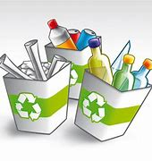

Luciana Lopera Caceres
Isabella Machado Martinez
ACTIVIDAD DE COMPLEMENTARIO INGLES
ACTIVIDAD 1 1 AIR POLLUTION: Contaminación atmosférico 2 OZONE LAYER: Capa de ozono 3 RAINFOREST: Selva 4 ENERGY: Energia 5 ENDANGERED ANIMALS: ANIMALES EN PELIGRO DE EXTINCIÓN 6 ENVIRONMENT: MEDIO AMBIENTE 7 ENVIRONMENTALIST: ECOLOGISTA 8 PESTICIDE: PESTICIDA 9 DEFORESTATION: DEFORESTACIÓN 10 RECYCLE: RECICLAR 11 ACID RAIN: LLUVIA ÁCIDA 12 GLOBAL WARMING: CALENTAMIENTO GLOBAL 13 AEROSOL SPRAY: AEROSOL EN AEROSOL 14 EXHAUST FUMES: GASES DE ESCAPE 15 PLANET: PLANETA 16 GREENHOUSE EFFECT: EFECTO INVERNADERO 17 WATER CONTAMINATION: CONTAMINACIÓN DEL AGUA
TRADUCCION 1.TOXIC GASES EXPELLED BY CARS: EXHAUST FUMES -GASES TÓXICOS EXPULSADOS POR LOS COCHES: GASES DE ESCAPE 2.THE RISE IN TEMPERATURE CAUSED BY GASES IN THE ATMOSPHERE: GLOBAL WARMING - EL AUMENTO DE LA TEMPERATURA CAUSADO POR LOS GASES EN LA ATMÓSFERA: CALENTAMIENTO GLOBAL 3. ANIMALS WHICH ARE IN DANGER OF BECOMING EXTINCT: - ANIMALES EN PELIGRO DE EXTINCIÓN: 4. THE PROCESS BY WHICH THE EARTH IS HEATED WHEN THE ATMOSPHERE TRAPS HEAT FROM THE SUN: GREENHOUSE EFFECT - EL PROCESO POR EL CUAL LA TIERRA SE CALIENTA CUANDO LA ATMÓSFERA ATRAPA EL CALOR DEL SOL: EFECTO INVERNADERO 5. POLLUTED WATER FALLING FROM THE CLOUDS: - AGUA CONTAMINADA QUE CAE DE LAS NUBES: 6. A TYPE OF SPRAY CONTAINING PRESSURISED LIQUID: WATER CONTAMINATION - UN TIPO DE PULVERIZACIÓN QUE CONTIENE LÍQUIDO PRESURIZADO: CONTAMINACIÓN DEL AGUA 7. POLLUTION OF THE ATMOSPHERE: DEFORESTATION - CONTAMINACIÓN DE LA ATMÓSFERA: DEFORESTACIÓN 8. A DENSE FOREST IN A TROPICAL REGION: - UN BOSQUE DENSO EN UNA REGIÓN TROPICAL: 9. IT PROTECTS US FROM THE SUN´S ULTRAVIOLET RADIATION: OZONE LAYER - NOS PROTEGE DE LA RADIACIÓN ULTRAVIOLETA DEL SOL: Capa de ozono 10. THE NATURAL WORLD IN WHICH PEOPLE,ANIMALS AND PLANTS LIVE: PLANET - EL MUNDO NATURAL EN EL QUE VIVEN LAS PERSONAS, LOS ANIMALES Y LAS PLANTAS: PLANETA
11. THE POWER THAT COMES FROM COAL, ELECTRICITY, GAS, ETC. THAT IS USED FOR PRODUCING HEAT: - LA ENERGÍA QUE PROVIENE DEL CARBÓN, ELECTRICIDAD, GAS, ETC. QUE SE UTILIZA PARA PRODUCIR CALOR: 12. CUTTING DOWN TREES OVER A LARGE AREA: - TALAR ÁRBOLES EN UN ÁREA GRANDE: 13. PUT USED OBJECTS AND MATERIALS THROUGH A PROCESS SO THAT THEY CAN BE USED AGAIN: RECYCLE - SOMETA LOS OBJETOS Y MATERIALES USADOS A UN PROCESO PARA QUE PUEDAN VOLVER A UTILIZARSE: RECICLAR 14. A PERSON WHO WANTS TO PROTECT THE ENVIRONMENT: ENVIRONMENTALIST - UNA PERSONA QUE QUIERE PROTEGER EL MEDIO AMBIENTE: ECOLOGISTA 15. A CHEMICAL SUBSTANCE THAT IS USED FOR KILLING ANIMALS,ESPECIALY INSECTS THAT EAT FOOS CROPS: - UNA SUSTANCIA QUÍMICA QUE SE UTILIZA PARA MATAR ANIMALES, ESPECIALMENTE INSECTOS QUE COMEN CULTIVOS FOOS 16. ADD A CHEMICAL SUBSTANCE WHICH WILL MAKE THE WATER DIRTY OR HARMFUL: - AGREGUE UNA SUSTANCIA QUÍMICA QUE ENSUCIARÁ O DAÑARÁ EL AGUA: 17. A LARGE BODY IN SPACE THAT MOVES AROUND THE SUN: - UN CUERPO GRANDE EN EL ESPACIO QUE SE MUEVE ALREDEDOR DEL SOL:
ACTIVIDAD 2. Take a realistic approach to protecting the earth and first consider what you can do in your own home. This is much more manageable than taking on the world. It is in these simple everyday steps that one can make an impact. By setting a good example for your children, you are fostering a sense of stewardship that will last generations to come. 1. Make your own non-toxic cleaning products. Doing this will reduce the use of plastics because you are reusing plastic containers to hold the cleaning products. The ingredients are also biodegradable which means it is gentler on the environment. 2. Use cloth bags at the grocery store and for all your grocery needs. Store them in the trunk of your car so you always have them on hand. You don't have to limit their use to the grocery store. If you don't have a cloth bag with you when you are shopping, ask yourself if you need a bag at all. 3. Explore the idea of purchasing energy-efficient appliances. They may cost more upfront but in the end you will save money because they use less energy. Replace regular light bulbs with their energy efficient counterparts. You pay a little more, but the life of the bulb is significantly longer. 4. Set up a compost bin. Add a few less things to the landfill by composting your kitchen scraps. All plant-derived foods, coffee grounds and tea leaves can be composted. Have a small container in your home to place items. in. When the storage container gets full, transfer the waste to an outdoor bin. Use the resulting rich fertile soil in the garden. 5. Grow an organic garden. Being able to rely on yourself for fresh produce is very rewarding. Share your harvest with neighbors, can and preserve the excess for years to come. If you don't have the space or time to grow a garden, shop locally and support local
TRADUCCION 1. Haz tus propios productos de limpieza no tóxicos. Hacer esto reducirá el uso de plásticos porque estás reutilizando recipientes de plástico para guardar los productos de limpieza. Los ingredientes también son biodegradables, lo que significa que es más suave con el medio ambiente. 2. Use bolsas de tela en la tienda de comestibles y para todas sus necesidades de comestibles. Guárdelos en la cajuela de su automóvil para tenerlos siempre a mano. No tienes que limitar su uso a la tienda de comestibles. Si no tiene una bolsa de tela con usted cuando va de compras, pregúntese si necesita una bolsa. 3. Explore la idea de comprar electrodomésticos de bajo consumo. Pueden costar más por adelantado, pero al final ahorrará dinero porque usan menos energía. Reemplace las bombillas regulares con sus contrapartes de bajo consumo. Pagas un poco más, pero la vida útil de la bombilla es significativamente más larga. 4. Instala un contenedor de compost. Agregue algunas cosas menos al vertedero al compostar los desechos de su cocina. Todos los alimentos de origen vegetal, los posos de café y las hojas de té se pueden compostar. Tenga un recipiente pequeño en su casa para colocar artículos. pulg. Cuando el contenedor de almacenamiento se llene, transfiera los desechos a un contenedor al aire libre. Use el suelo rico y fértil resultante en el jardín. 5. Cultivar un jardín orgánico. Poder confiar en uno mismo para obtener productos frescos es muy gratificante. Comparta su cosecha con los vecinos, enlate y conserve el exceso para los años venideros. Si no tiene el espacio o el tiempo para cultivar un jardín, compre localmente y apoye a los agricultores locales.
